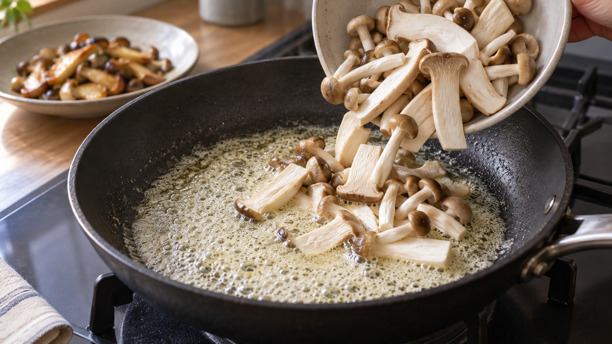

バターの泡が細かくなったら、きのこを焼く｜水分が抜ける音を合図にする
フライパンへバターを落とす。
すぐに白い泡が広がり、パチパチと音がする。ここで食材を入れるのか、もう少し待つのか。レシピに「バターが泡立ったら」と書かれていても、泡は最初から最後まで同じではない。
見るべきなのは、泡が出たかどうかではなく、大きな泡と強い音が落ち着き、泡が細かくそろう瞬間だ。
今日の結論
バターで焼き始めるなら、溶けた直後ではなく、勢いのある大きな泡が細かい泡へ変わり、パチパチという音が少し静かになったところを使う。
これは、バターに含まれる水分の多くが蒸気になって抜け、脂の温度が上がり始める合図だからだ。ただし、泡だけから「何℃」と決めることはできない。火力、フライパンの広さ、バターの量で見え方は変わる。
待ちすぎて泡が消え、底に茶色い粒が見え始めると、今度はバター自身を焦がす段階へ入る。食材を焼くなら、その一歩手前が使いやすい。
バターは、油だけではない
バターは、脂の中に小さな水滴が散らばった食品だ。日本の成分規格では、乳脂肪分は80%以上、水分は17%以下と定められている。
だから、冷たいバターをフライパンへ入れると、まず脂が溶け、その中の水が温まる。水滴が蒸気へ変わると体積が増え、脂の中を泡として上がってくる。表面では泡が破れ、その動きがパチパチという音になる。
熱い油の中へ水滴を入れ、泡の形と音を調べた研究でも、水が蒸気の泡を作り、泡が破れる動きと音が結び付いていることが確認された。
ただし、この研究は高温の油と少量の水を使った単純な模型だ。家庭のバターで「この泡なら何℃」と決めた研究ではない。ここから使えるのは、泡と音が、水の動きを知らせるという考え方までだ。
泡が変わると、フライパンの仕事も変わる
水が盛んに蒸発している間、加えた熱の多くは、水を蒸気へ変えるために使われる。
水が減ってくると、同じ火力でも脂とフライパンの温度が上がりやすくなる。料理の表面も、水分が残っている間は温度が上がりにくく、乾いてから焼き色を作る反応が進みやすくなる。
たとえるなら、最初のバターには小さな保冷剤がたくさん混ざっている。保冷剤に当たる水が蒸気として抜けると、熱が脂とフライパンへ回りやすくなる。実際には水が冷たいまま残るわけではないが、熱の使い道が切り替わるイメージだ。
この切り替わりを目と耳で捉えると、温度計がなくても、溶かす段階から焼く段階へ移るタイミングをそろえやすい。
研究から分かったのは、「待ちすぎると香り作りが始まる」こと
バターから水を抜いて作るギーを調べた研究では、加熱温度が高くなるほど、乳由来の成分が褐色へ変わる反応が進んだ。特に120〜160℃の加熱で、その進行が大きくなった。
ここから分かるのは、水が減った後も加熱を続けると、バターは単なる焼き油ではなく、バター自身の色と香りを作る段階へ進むということだ。
クリームを加熱した別の研究でも、加熱後にはメチルケトンやラクトン、褐色化に伴う香り成分が増えた。つまり、茶色い粒と香ばしい匂いは、見た目だけの変化ではない。
家庭料理へ戻すと、狙いは二つに分かれる。
食材へ穏やかなバターの香りを付けたいなら、泡が細かくなり、色がまだ薄い段階で入れる。ナッツのような焦がしバターの香りが欲しいなら、さらに加熱して底の乳成分を薄い茶色にする。
今回のきのこソテーでは、きのこの香りを消さず、表面を焼きやすくするため、前者を使う。
今日の一皿：泡を見て入れる、きのこのバターソテー
材料（2人分）
- エリンギ 100g
- しめじ 100g
- 無塩バター 15g
- 塩 2g
- 黒こしょう 少々
- しょうゆ 小さじ1
作り方
- エリンギは縦に5mmほどの厚さへ切る。しめじは石づきを落としてほぐす。表面に水気があれば、キッチンペーパーで拭く。
- フライパンを弱めの中火にかけ、バター15gを入れる。溶けた直後は、大きな泡と強い音が出る。
- フライパンを軽く揺すりながら待つ。大きな泡が減り、白く細かな泡が全体へそろい、音が少し静かになったら、底の色を確認する。茶色くなる前にきのこを入れる。家庭の火力では30〜90秒ほどが目安だが、時間より泡・音・色を優先する。
- きのこを広げ、1分30秒ほど動かさない。焼き色が付いたら返し、さらに1〜2分焼く。
- 塩と黒こしょうを加え、最後にしょうゆを鍋肌から回し入れる。10秒ほど全体を返して火を止める。
きのこを入れると、きのこ自身の水分が温まり、もう一度音が強くなる。これは失敗ではない。バターの水分が抜ける音から、食材の水分が抜ける音へ主役が交代しただけだ。
「細かい泡」は温度計ではなく、変化の標識
同じ15gのバターでも、小さなフライパンと大きなフライパンでは水の抜け方が違う。発酵バター、無塩バター、有塩バターでも、乳成分や水分は完全には同じではない。
そのため、「細かな泡になれば必ず150℃」とは言えない。泡が細かいことだけを見るのではなく、次の三つを一つの流れとして見る。
大きな泡が減る。音が少し静かになる。底はまだ茶色くない。
この三つがそろったら、食材を入れる。茶色い粒が先に見えたら、火を弱めてすぐに食材を入れるか、いったんフライパンを火から外す。
日常へ広げるなら、「水分を飛ばす」と「焦がす」を分ける
この考え方は、ムニエル、オムレツ、パンケーキ、バターしょうゆ炒めにも使える。
判断基準は、バターの色ではなく、今は水を飛ばしているのか、乳成分を焦がし始めているのかだ。
やさしいバター香を残したい料理では、音が落ち着いたらすぐ食材を入れる。焦がしバターをソースにしたい料理では、そこから火を弱め、鍋底の粒が薄茶色になるまで進める。高温で長く焼きたい料理なら、バターだけに任せず、焦げにくい油で焼いて最後にバターを加える方法も選べる。
買い物でも同じだ。水分と乳成分をほぼ除いたバターオイルやギーは、普通のバターほど白い泡が出ない。泡の合図を使いたいなら、まず手元の製品が普通のバターか、ほぼ脂だけの製品かを確認する。
まとめ
バターの最初の泡は、脂が熱いという印だけではない。バターに含まれる水が、蒸気になって出ていく姿でもある。
大きな泡と強い音が落ち着き、泡が細かくそろうと、脂の温度が上がりやすい段階へ移る。ただし、泡だけで正確な温度は分からない。
大きな泡、音、底の色。この三つを続けて見る。
次にバターで焼くときは、時計ではなく、フライパンが出す合図を一度だけ待ってみよう。
参考文献
- 厚生労働省. 乳及び乳製品の成分規格等に関する命令. https://www.mhlw.go.jp/web/t_doc?dataId=78333000&dataType=0&pageNo=1
- Kiyama A, Tagawa Y, Ando K, Kameda M. Morphology of bubble dynamics and sound in heated oil. Physics of Fluids. 2022;34:062105. https://doi.org/10.1063/5.0088065
- Vega C, Ubbink J. Molecular gastronomy: a food fad or science supporting innovative cuisine? Trends Food Sci Technol. 2008;19(7):372-382. https://doi.org/10.1016/j.tifs.2008.01.006
- Yokogawa T, et al. Effect of Maillard reaction on the quality of clarified butter, ghee. J Nat Med. 2023;77(1):230-237. https://doi.org/10.1007/s11418-022-01661-y
- Ye T, Liu S, Liu J, et al. Effect of Thermal Treatment on Major Ingredients and Volatile Compounds of Cream Studied by Nuclear Magnetic Resonance Spectroscopy and Gas Chromatography-Mass Spectrometry. Food Science. 2022;43(10):220-226. https://doi.org/10.7506/spkx1002-6630-20210612-149
※「泡が細かくなり、音が静かになったら食材を入れる」は、バターの組成と水・油系の泡の研究から導いた家庭向けの判断法であり、泡の形から正確な温度を測る方法ではない。